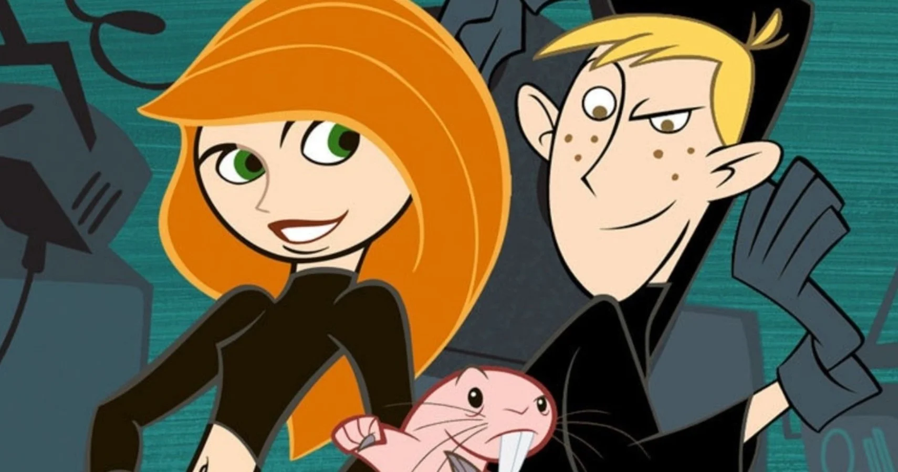

About Kim
Kim is a badass girl! she fights crime on a regular basis, while trying to cope with everyday teenage issues
Kim and her friends
Kim's Characterstics
- She's got strong memeory
- she misses her classes to solve crimes
- she strggles with her daily teenage problems
Kim's Friends
Kim is aided by her clumsy best friend Musta and his pet naked mole rat Rufus. Click on the links below to read more about them: